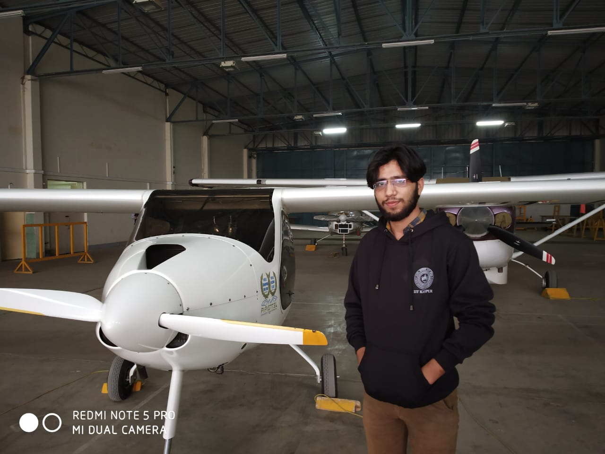
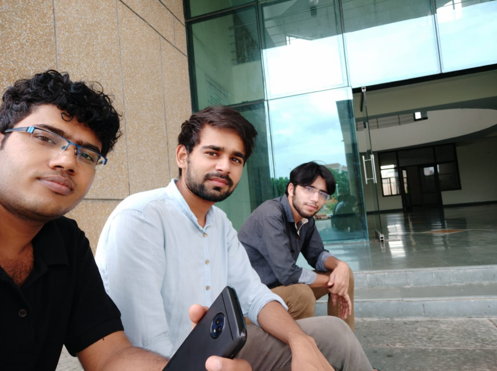
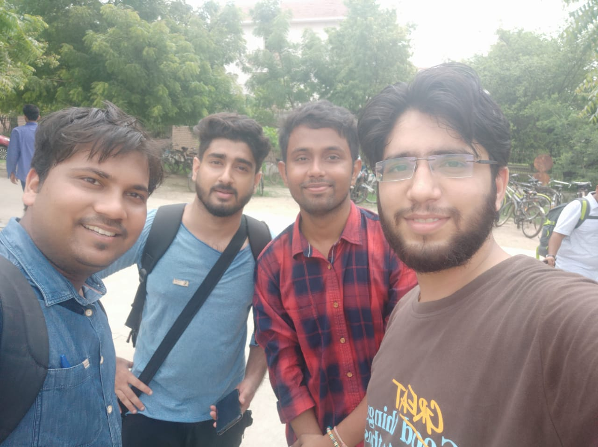

PLACEMENT POSTULATES -By Shuaib Alam
Hello Everyone!
Myself SHUAIB ALAM. I completed my Graduation from JAMIA MILLIA ISLAMIA, NEW DELHI in CIVIL ENGINEERING. Thereafter I completed my M.TECH in GEOTECHNICAL ENGG. From IIT KANPUR (Y18). I got placement from IITK in Phase 2 in HERO FUTURE ENERGIES (NEW DELHI). The joining is deferred due to COVID19. I was preparing for competitive exams like ESE, GATE from my graduation phase and appeared in some interviews like BARC. So I had a good grip on all the subjects of civil engineering that helps me a lot in the placement drive.
Though I didn’t get placed in Phase 1 as the majority of the companies were of coding, product manager, data analyst, etc. So there was little chance of getting selected in Phase 1 as the competition is quite tough. But in Phase 2 the probability was more than Phase 1. For civil engineering, there was not much difference in the CTC of the private companies coming in both phases. In Phase 2 most of the companies are quite of core background like in my case the post was especially of geotechnical engineer and I got an advantage. Hence Phase 2 proves to be good for me.
Although there is a kind of stress or disappointment because of not getting selected in Phase 1 but that’s not the end. Still, there are good chances of getting placed in Phase 2 as you have already prepared for that.
Now you only have to brush up yourself and just identify your mistakes and weak points that were made by you in Phase 1. Talk to your friends and identify the approach and key points that are to be used in the interview. You should know that students having low CPI can get higher packages as compared to students having more CPI. So it is all about your skills, talent, hard work, etc.
In the HERO FUTURE ENERGIES, firstly there was an online interview and some students are shortlisted. After that, there was another technical round and I was the only one who got shortlisted. Thereafter there was H.R. round that was at their office in NEW DELHI. In my opinion, it is just only to see that how much you are motivated to get the job and to just know you personally.
So, at last, I would like to conclude that you just do your best and do not bother much about the results.